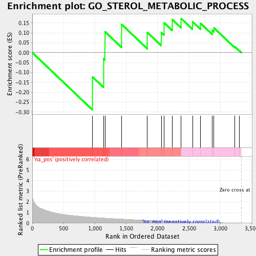

| | | Dataset | Predixcan_lymphoblast |
| Phenotype | NoPhenotypeAvailable |
| Upregulated in class | na_neg |
| GeneSet | GO_STEROL_METABOLIC_PROCESS |
| Enrichment Score (ES) | -0.28889558 |
| Normalized Enrichment Score (NES) | -1.0310191 |
| Nominal p-value | 0.4117647 |
| FDR q-value | 0.95452094 |
| FWER p-Value | 0.813 |
Table: GSEA Results Summary

Fig 1: Enrichment plot: GO_STEROL_METABOLIC_PROCESS
Profile of the Running ES Score & Positions of GeneSet Members on the Rank Ordered List
| PROBE | GENE SYMBOL | GENE_TITLE | RANK IN GENE LIST | RANK METRIC SCORE | RUNNING ES | CORE ENRICHMENT | | 1 | CYP4V2 | | | 960 | 0.558 | -0.1224 | Yes |
| 2 | INSIG2 | | | 1136 | 0.485 | -0.0303 | Yes |
| 3 | CYP1B1 | | | 1160 | 0.479 | 0.1056 | Yes |
| 4 | TNFSF4 | | | 1425 | 0.390 | 0.1426 | Yes |
| 5 | CAT | | | 1836 | 0.277 | 0.1019 | Yes |
| 6 | SOAT2 | | | 2058 | 0.220 | 0.1012 | Yes |
| 7 | LIPA | | | 2102 | 0.210 | 0.1510 | Yes |
| 8 | CYB5R3 | | | 2234 | 0.186 | 0.1670 | Yes |
| 9 | EBPL | | | 2376 | 0.160 | 0.1723 | Yes |
| 10 | ARV1 | | | 2557 | 0.127 | 0.1559 | No |
| 11 | FDX1 | | | 2685 | 0.101 | 0.1477 | No |
| 12 | CYB5R1 | | | 2873 | 0.070 | 0.1124 | No |
| 13 | TRERF1 | | | 2899 | 0.066 | 0.1246 | No |
| 14 | LEPR | | | 3232 | 0.016 | 0.0296 | No |
| 15 | MBTPS1 | | | 3305 | 0.006 | 0.0096 | No |
Table: GSEA details [plain text format]
Fig 2: GO_STEROL_METABOLIC_PROCESS: Random ES distribution
Gene set null distribution of ES for GO_STEROL_METABOLIC_PROCESS